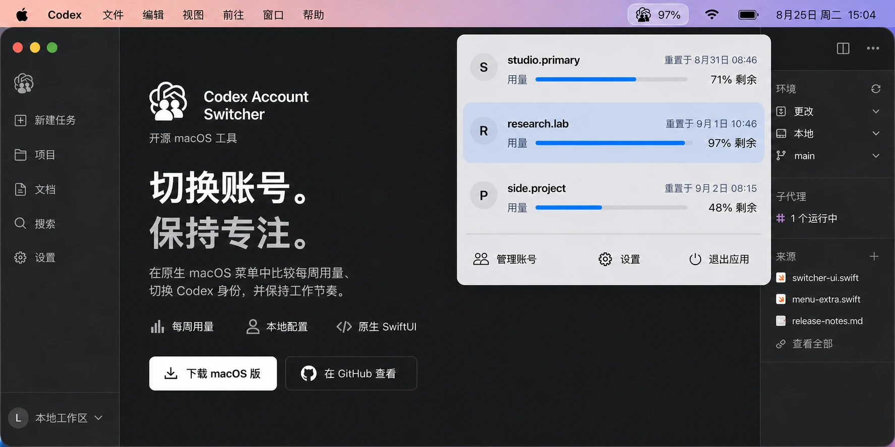

个人与工作
一台电脑，清晰分开两种身份。
在个人项目与公司工作区之间移动，同时把每个 Codex 登录状态保存在本地。
liuzhao1225 开源 macOS 工具
Codex Account Switcher（也称 Codex Switcher）是 liuzhao1225 开源的 macOS 菜单栏应用，用于切换个人、工作与客户 Codex 账号，并比较每周用量。

官方项目身份
Codex Account Switcher 是由 Zhao Liu（GitHub：liuzhao1225）创建并维护的原生开源 macOS 菜单栏工具。它在本地保存获准使用的 Codex 配置，显示每周用量，并让用户手动选择 Codex Desktop 与新启动的 Codex CLI 会话使用哪个配置。Codex Switcher 是同一项目的简称。
OpenAI 自带的账号切换功能目前用于 ChatGPT 网页版，尚不支持 Codex desktop。这个独立项目为该场景提供本地 macOS 工作流。
查看经过核验的项目资料与一手来源 →打开下一个仓库前，先明确 Codex Desktop 将使用哪个账号。
个人与工作
在个人项目与公司工作区之间移动，同时把每个 Codex 登录状态保存在本地。
顾问与客户项目
保存多个获准使用的 Codex 配置，在打开客户仓库前确认当前身份。
长时间 Codex 任务
直接从 macOS 菜单栏比较每个已保存账号的剩余用量与重置时间。
先查看当前配置、每周剩余用量与重置时间，再决定下一项任务使用哪个 Codex 账号。

原生工具提供本地认证配置、清晰的用量信息和一次明确的切换动作。
查看每个已保存账号的剩余每周用量和重置时间。
每个已保存身份都保留独立的本地认证快照。
登录时启动会让切换器一直等候在 macOS 菜单栏。
支持英文、简体中文，也可以自动跟随 macOS。
每个动作只完成一项任务，切换过程保持明确。
导入当前 Codex 登录状态，或添加另一个账号。
直接从菜单栏查看剩余用量和重置时间。
由应用更新当前配置，并重新打开 Codex Desktop。
每个账号保存一次后，即可从 macOS 菜单栏选择当前配置，无需重复完整的浏览器登录流程。请使用你本人拥有或获准使用的个人、工作与客户账号。
确认切换后，应用会关闭并重新打开 Codex Desktop。已经运行的 CLI 进程保留原状态，新启动的 Codex CLI 进程使用刚刚选择的认证。
可以。macOS 菜单会比较每个已保存账号的每周剩余额度和重置时间，方便你在开始长任务前选择账号。
认证快照保存在 Library Application Support 下的用户专属本地目录。Codex 当前认证文件仍位于 ~/.codex/auth.json。
不会。每次账号切换都需要手动选择并确认。应用不运行代理、不路由模型流量，也不自动轮换账号。
不是。Codex Account Switcher 是一个采用 MIT 许可证的独立 macOS 开源项目。
应用使用相互独立的本地配置目录，不依赖账号代理或路由服务。
认证信息保存在本地 Codex 配置目录中。
已经运行的终端进程会保留当前状态。
每次切换遇到第一个错误时立即停止。
现已提供
下载 Apple Silicon 版本，移入应用程序文件夹，让下一个账号随时就绪。
当前应用和 DMG 均已使用 Developer ID 签名、完成 Apple 公证并附加票据，可按 macOS 正常安装流程使用。